닷돈재 자동차야영장
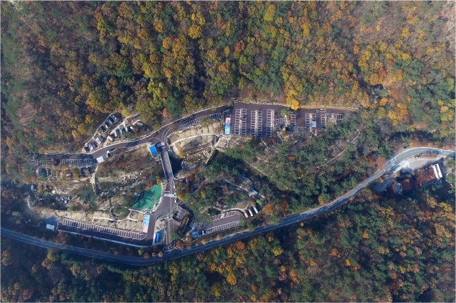
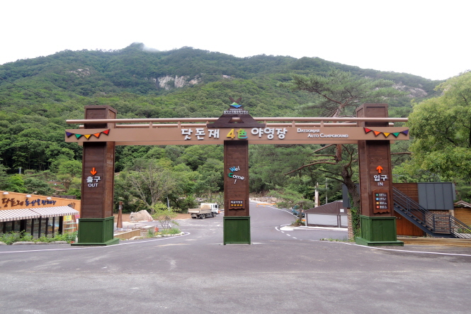
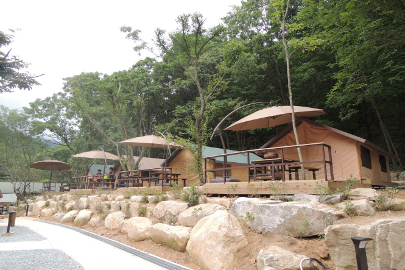
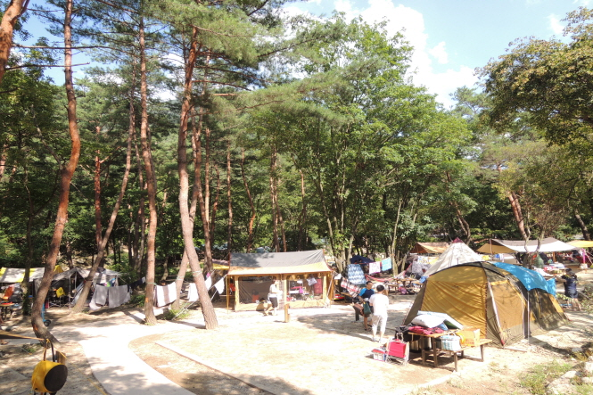
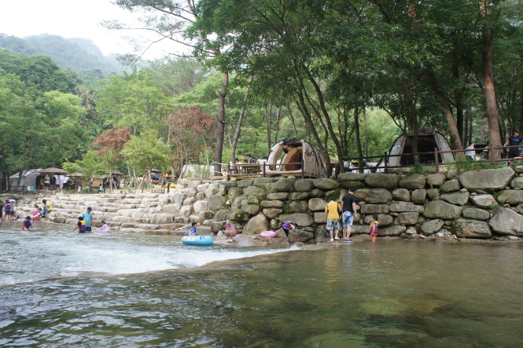
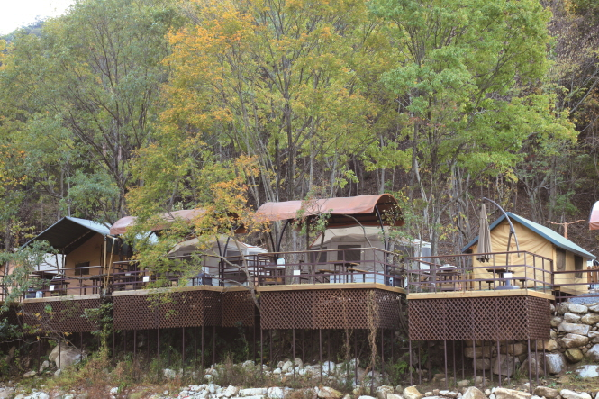
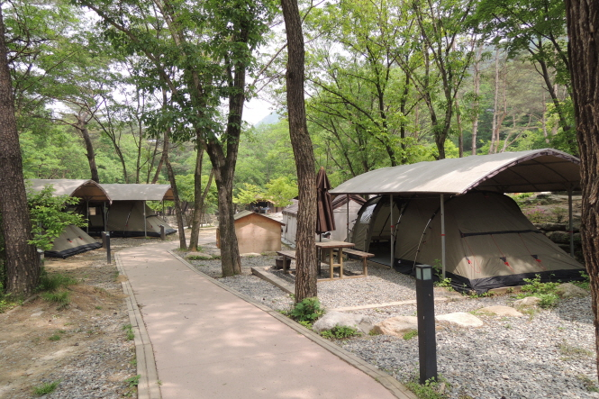
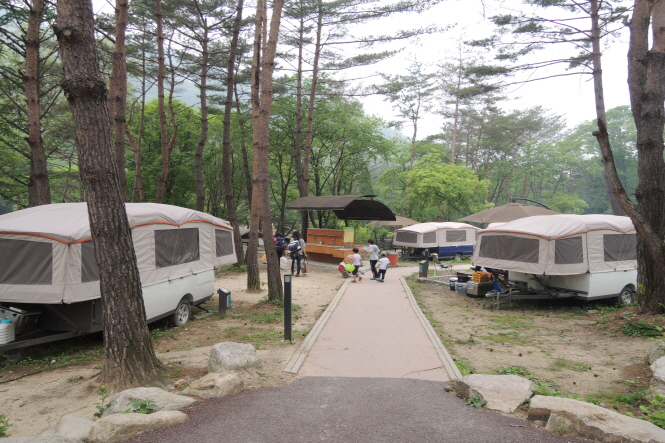
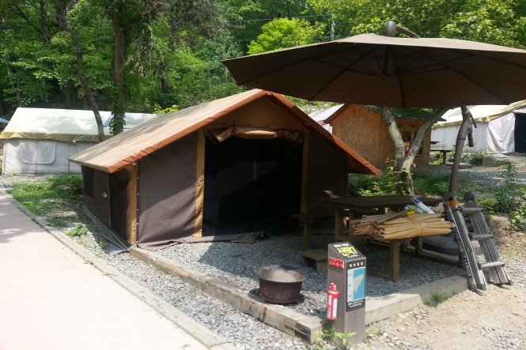
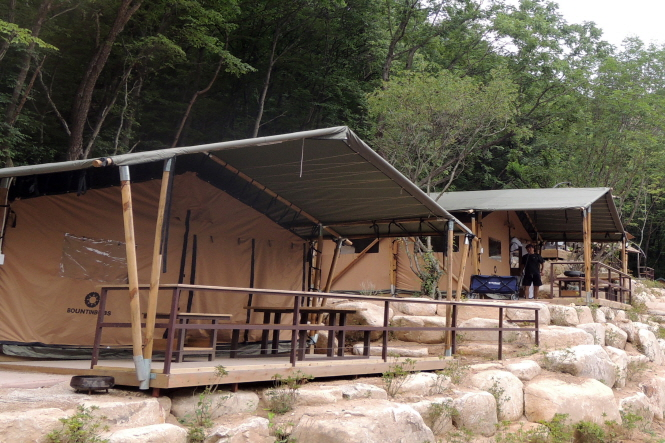
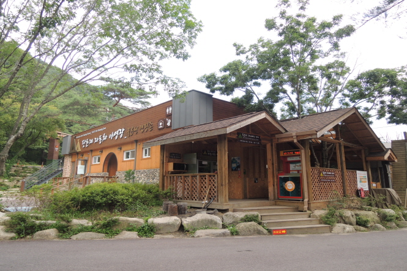
야영장 소개
가족단위 캠핑 등 국민의 여가문화 수요를 충족하고자 캠핑체험에 필요한 텐트, 취사도구, 침구세트 등이 갖추어진 고급화된 국민형 캠핑시설
위치 : 송계지구
면적 : 26,000(㎡)
규모 : 180
영지 : 자동차 - 124 / 풀옵션 - 56
편의시설 : 전기, 취사장, 화장실, 샤워장
이용방법 : 예약제
이용기간 : 연중